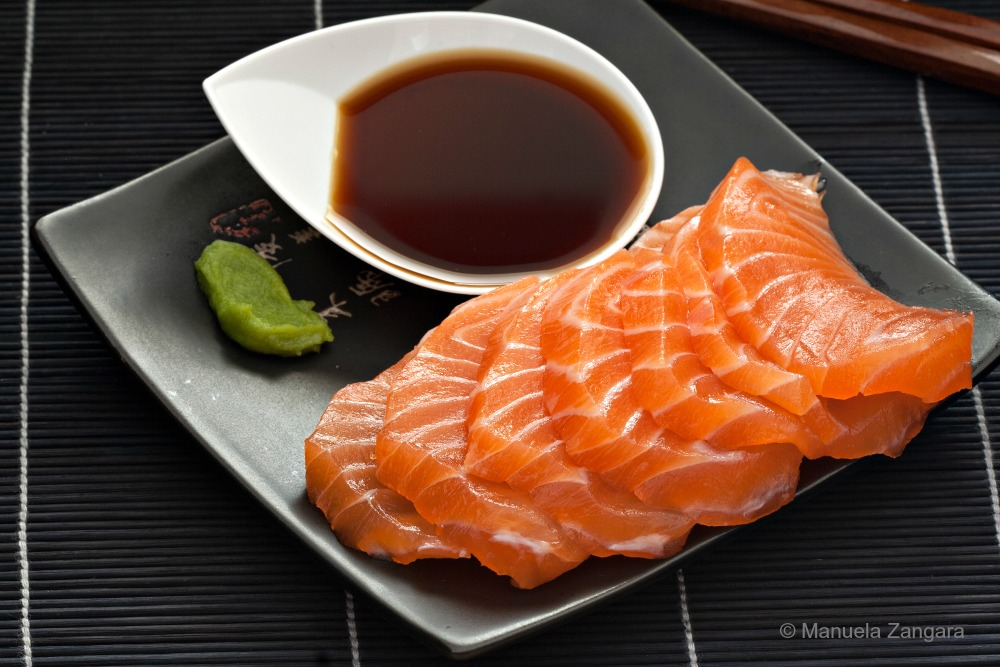

Sashimi

Description
A recipe for a nicely plated platter of salmon sashimi typically seen in Japanese restaurants.
Ingredients
- Fresh Sashimi Grade Salmon
- Soy Sauce
- Wasabi
Steps
- Slice the salmon with about half an inch of thickness each. Width may vary based on preference.
- Add soy sauce to a small sauce plate
- Plate the salmon on a nice dish.
- (Optional) Add wasabi to the side of the plate for aesthetic.
- (Optional) Mix wasabi with soy sauce for a superior taste.